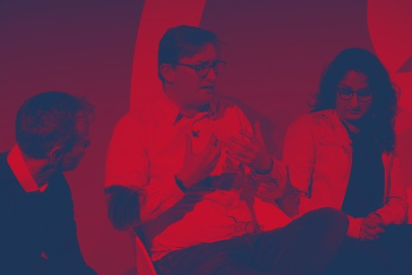

Galahad helps boards, CMOs, and transformation teams build, deploy, and govern AI that earns its place — and doesn't embarrass you on the front page.
Ross Barnes has been building digital things since before they were called digital. Global CTO at The&Partnership (WPP) — scaled from 15 to 1,500 people and from £80m to £1bn+ in billings. Chief Innovation Officer at Cedar (Omnicom). Interim CTO at ZerotoOne.ai, where the first enterprise clients were McDonald's and Toyota. He wrote a book on search in 2002. The current moment feels oddly familiar.
Galahad exists because most AI consultancies optimise for demos. We optimise for decisions. Everything we do — consulting, education, strategy, products — is built on one principle: AI that earns its place in the room.
Four specialist arms. One operating standard. Whether it's a board diagnostic, a team workshop, a marketing AI build, or an enterprise product — the method doesn't change.
Senior-level AI strategy for boards, CMOs, and transformation programmes. Where marketing meets AI — from brand positioning to GEO to full AI adoption strategy.
Hands-on AI literacy for teams and leaders. From half-day workshops to full certification programmes. Practical. Safe. No buzzwords.
14-day AI career transition sprint. Five modules, 42 tasks, real artefacts. From audit to launch.
From strategy to working systems. Galahad AI delivers AI-powered marketing infrastructure, campaign automation, and agent workflows that actually perform.
Where Galahad builds. Current product: Grail — the generative engine optimisation platform for brands who need to become the answer AI surfaces.
Every Galahad engagement — consulting, workshop, or build — runs on the same repeatable framework. Not ad hoc. Not vibes. A method.
What does the organisation actually need to decide or do differently? We start with business outcome, not technology.
Governance, data, compliance, and human factors. We make the risk landscape visible before any build begins.
Decision boundaries, escalation paths, human gates. AI that knows its limits is AI you can trust.
Small, safe, measurable. We ship working systems with feedback loops, not prototypes that die in a boardroom.
Every engagement leaves the client team more capable than when we arrived. That's the long-term ROI.
A focused 2-hour session to map your AI maturity, surface the highest-value opportunities, and identify the governance gaps that could trip you up. No slides. No sales deck. Just clarity.
£2,500 · Remote or London · Results within 5 working days
Book a Diagnostic →Real outcomes at real scale. The numbers are the story.
Designed and delivered a bespoke Data Management Platform that secured the £350m Toyota/Lexus win across Europe. Built the architecture, led the pitch, delivered the platform.
Scaled the agency from 15 to 1,500 employees and £80m to £1bn+ in billings as Global CTO. Sat on the Global Board. Drove Agile transformation across every function.
Established a £200m Global Digital Hub consolidating media delivery and analytics for GroupM clients — pioneering real-time bidding methodology for Digital OOH in the UK.
Delivered AI literacy programmes to 1,000+ senior leaders alongside faculty from MIT and Stanford. Practical decision frameworks. 30-day action plans. Real guardrails.
Led and won major client pitches for British Airways and WHSmith as Chief Innovation & Technology Officer — Cedar's largest-ever business wins.
As Interim CTO at a Carnegie Mellon AI spinout, defined GTM strategy and secured the first enterprise contracts — McDonald's and Toyota — within the first operating year.
Advising senior marketing leaders on AI adoption strategy: from audit to roadmap to implementation. GEO, campaign automation, content intelligence, and where AI earns its place in the marketing stack.
From boardrooms to global stages. Ross speaks on AI strategy, governance, responsible automation, and the human side of digital transformation.

The business case for responsible AI — why governance is a growth lever, not a brake. Built for leadership teams who need to move fast without breaking things.
A hands-on session for product, data and technology teams. How to decompose AI tasks, add guardrails, handle data safely, and avoid the failure modes nobody talks about.
Unscripted, no-hype commentary on where agentic AI is actually going and what it means for CMOs, CTOs, and the organisations between them.
A confidential, facilitated session for boards and C-Suite teams. Risk frameworks, liability landscape, competitive positioning. Galahad Method applied to your context.
Separating signal from noise on autonomous AI systems. What agents can do today, where they break, how to scope safely, and when NOT to build one.
From GEO and content intelligence to campaign automation and first-party data strategy — a frank, un-hyped keynote for marketing leaders navigating a landscape where AI is reshaping the entire function.
Selected for the ALPHA programme at Web Summit Lisbon 2024. Regular contributor and commentator on AI, MarTech, and digital transformation.
Ross advised our largest clients on their data and technology needs, ensuring their ecosystems stayed ahead of their competitors and future-proofing them to successfully navigate the fast-changing digital and data landscape. The more technical the question, the happier he is.
Only occasionally are you given the opportunity to work with someone who is thoroughly professional, absolutely expert in what they do, totally dedicated and who constantly strives to break the barriers re service levels. Ross is one of that rare breed.
His real value to any business must be the ability to strategically link specialist knowledge together with the wider communications picture.
Real thinking on AI strategy, adoption, and what the next wave actually requires of organisations.
In 2002 I wrote a book called Search Engineering Your Website. At that time, search was not a marketing problem — it was an engineering one. We are at a similar moment again. Only this time the machine isn't just Google. It's agents.
Read on LinkedIn →Every AI engagement reaches the same moment: someone asks if the tool can do something else too. The honest answer is usually yes. But that instinct — to keep expanding — is almost always where things start to go wrong. Start narrow. Start useful. Earn trust.
Read on LinkedIn →Running product-neutral AI enablement training across more than 1,000 senior product, data, and commercial leaders clarifies something fast: the hard part isn't capability. It's deciding where to draw the line — where AI stops and human judgement begins.
Read on LinkedIn →Why generative engine optimisation requires a fundamentally different architecture. Ranking on AI surfaces isn't about keywords. It's about becoming the most credible source in your category — structurally and semantically.
Discuss this →A concise guide for executives presenting AI strategy upwards. The framing, the risk language, and the governance questions you will be asked before the slide deck ends.
Discuss this →AI intelligence delivered to the court. No product announcements, no fundraising hype — just what matters to decision-makers and why.
Subscribe →Long-form thinking and quick-fire signals on AI strategy, governance, and what's actually changing — published direct from the Galahad operating system.
Most governance frameworks were written for a world of single-model deployments and human-in-the-loop workflows. Agentic AI breaks every assumption they're built on. Here's what needs to change.
Discuss this →After 90 days, most AI projects have either proven their value or revealed their flaws. Here's the framework Galahad uses to separate signal from sunk cost.
Discuss this →First fines expected by Q3. If your compliance framework is still "in progress," the clock is now audible.
The agentic stack just got another layer. Implications for enterprise tool chains and the "build vs. buy" debate.
The shortest average tenure in the C-suite just got shorter. AI-literate CMOs are outlasting their peers by 18 months.
Tell us what you're trying to solve. We'll tell you whether we're the right people to help — and if we're not, we'll say so.